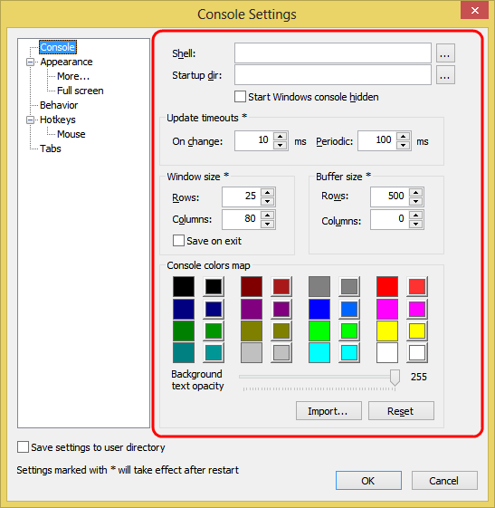

Shell
Specifies default shell commad line. If empty, ConsoleZ will use COMSPEC environment variable as default shell.
Startup dir
Specifies default initial directory for shells.
Start Windows console hidden
Launch the underlying console app hidden. It prevents a flick in the Windows Taskbar.
Warning: some console applications, e.g. PowerShell, that open GUI windows may not work correctly
when this option is checked.
On change
Update interval (in ms) after ConsoleZ detects a change in the hidden
console window. When a change is detected, ConsoleZ will defer screen
update for the specified interval.
This is needed to improve performance during fast changes in the
hidden console. Realistic values are 10-50.
Periodic
Periodic update interval (in ms). This value specifies how often
ConsoleZ performs screen updates, even when there is no change detected.
ConsoleZ sometimes cannot detect changes in the hidden console window
(usually by old DOS applications)
This value should be larger than 'On
change' update interval. Realistic values are in the 50-500 range.
Rows
Initial window row count.
Columns
Initial window column count.
Rows
Initial buffer row count.
Columns
Initial buffer column count.